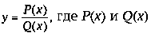
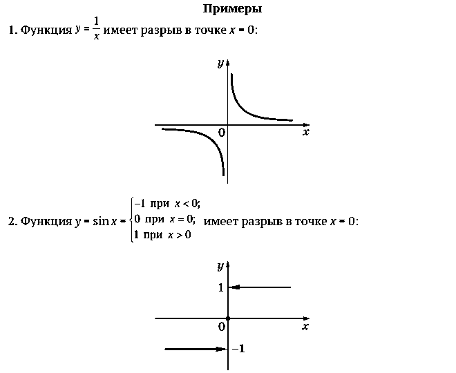
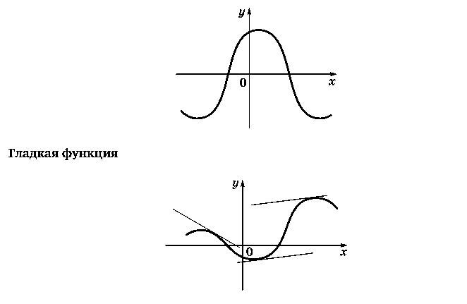
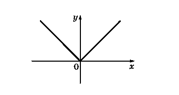
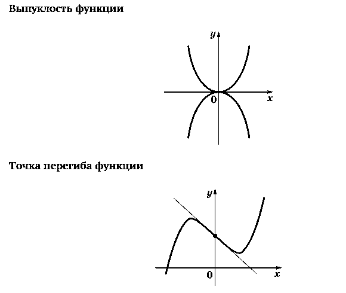
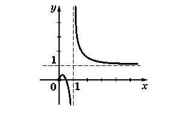
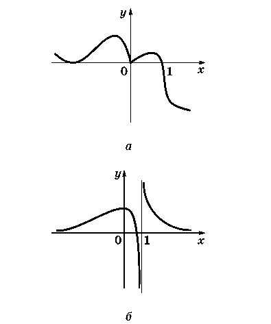

1. Точка разрыва функции. Это точка, около которой значения функции совершают скачок. Точнее, точка x0 называется точкой разрыва функции, если можно указать такое расстояние d, что сколь угодно близко к x0 всегда найдутся точки, в которых значения функции расположены друг от друга на расстоянии, большем, чем d.
В первом примере скачок функции в точке разрыва бесконечен, во втором — конечен. Рациональные функции вида — многочлены, имеют разрывы с бесконечным скачком в корнях знаменателя.

2. Непрерывность функции на промежутке. Функция называется непрерывной на некотором промежутке, если у нее нет на этом промежутке точек разрыва.
Понятие непрерывности функции соответствует представлению о непрерывности движения карандаша при изображении ее графика.
Рациональная функция непрерывна на любом промежутке, не содержащем корней ее знаменателя. В частности, график функции f = P(x), где P(x) — многочлен, непрерывен на всей числовой оси.
Функция называется гладкой, если в каждой точке ее графика можно однозначно провести касательную.
Непрерывность функции на промежутке

3. Угловые точки. Точки, в которых нарушается гладкость, распознаются на графике легко — это, разумеется, ее точки разрыва, а также угловые точки, типичным примером которых является точка x = 0 для функции y = |x|.
В школьной практике угловые точки связаны исключительно с вычислением модуля и появляются при построении графиков функций типа y = |f(x)|. В угловой точке сама функция остается непрерывной, однако нарушается непрерывность изменения касательной к графику. Можно сказать точнее, что в угловой точке угол наклона касательной имеет скачок.

4. Выпуклость функции. Наглядным свойством графика функции на некотором промежутке является его выпуклость. Она может быть направлена как вверх (например, у функции y = -x2), так и вниз (y = x2). Точка, в которой меняется характер выпуклости, называется точкой перегиба функции. Вблизи нее график функции перегибается. Если в этой точке можно провести касательную, то видно, что по одну сторону от точки перегиба график функции начинает уходить выше касательной (в эту сторону график становится выпуклым вниз), а по другую сторону график уходит вниз (становится выпуклым вверх).

5. Асимптота графика функции. Асимптотой графика функции называется прямая, к которой неограниченно приближаются точки графика функции при их удалении от начала координат. Асимптоты бывают вертикальные и наклонные. Вертикальные асимптоты могут появиться только тогда, когда функция имеет бесконечный разрыв, т. е. скачок функции в точке разрыва бесконечен. Наклонные асимптоты могут быть только в том случае, если область определения функции бесконечна.

ВОПРОСЫ И ЗАДАНИЯ
Функция y = f(x) задана графиком а, а функция y = g(x) — графиком б.

Ответьте по графику, верны ли для этих функций следующие утверждения:
1. Функция непрерывна на всей области определения
2. Функция имеет одну точку разрыва
3. Функция является гладкой при x > 1.
4. Функция является гладкой на промежутке (1; +∞).
5. Функция имеет одну точку, в которой она определена и при этом нарушается ее гладкость.
6. Функция имеет одну угловую точку.
7. Функция имеет ровно один нуль.
8. График функции не имеет асимптот
9.Касательную можно провести в любой точке графика.
10. Ровно в двух точках графика касательная параллельна оси x
11. На промежутке (0; 1) функция является выпуклой вверх
12. При x > 1 функция является выпуклой вниз.
13. Неравенство f(x) < 0 верно на всей области определения
14. Функция не имеет точек перегиба.
15. Функция имеет одну точку перегиба.
16. Функция не имеет наибольшего значения
17. Функция не имеет наименьшего значения.
18. Функция имеет ровно один максимум.
19. Функция имеет ровно один минимум.
20. Существует только одно число a такое, что уравнение f(x) = a имеет ровно один корень.
21. Не существует таких чисел a, для которых уравнение f(x) = a имеет ровно три корня.
22. При каждом значении k уравнение f(x) = kx имеет ровно два корня
23. Существует бесконечно много значений k, при которых уравнение f(x) = kx имеет ровно два корня.
24. Существует такое число a, что уравнение f(x) = ax2 имеет ровно один корень.